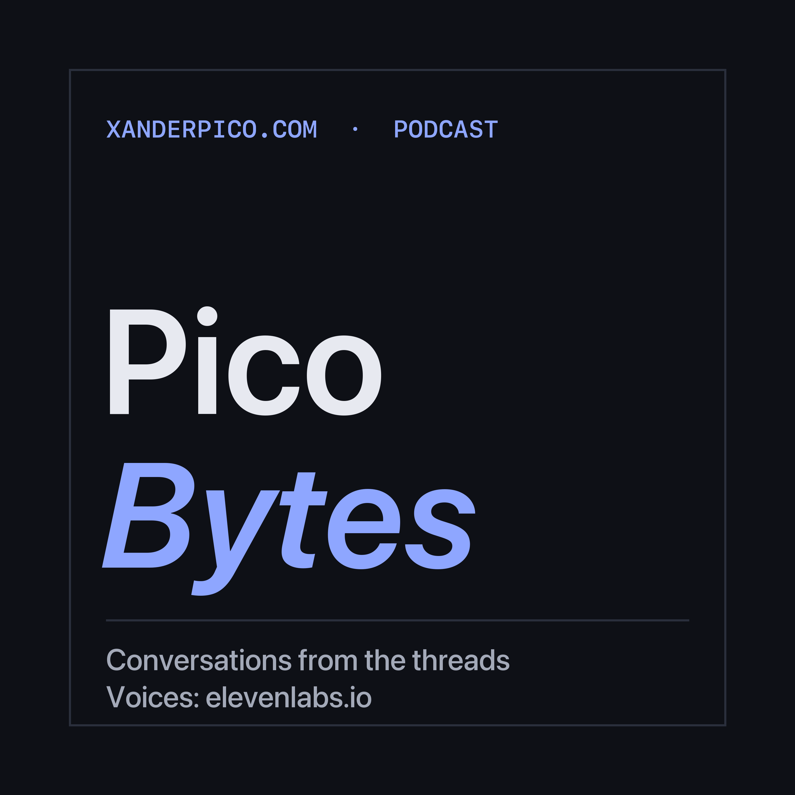

PODCAST
Pico Bytes
Conversations from xanderpico.com.
Pico Bytes is a short conversation podcast from xanderpico.com, Alex Pico's site on experimental science, software and AI. Each episode takes one thread or newsletter from the site and walks through what is published there, sources and all. Two AI voices by elevenlabs.io read a script grounded in the published page; the page itself carries the sources.
Voices: elevenlabs.io (ElevenLabs premade voices, free plan, non-commercial). Subscribe in any podcast app with the feed address https://xanderpico.com/podcast.xml
Episodes
EPISODE 1 · October 26, 2026 · 9:22
Frontier labs as national laboratories, the October newsletter
Frontier AI labs already get lab-style treatment from the US government, but through one-off levers rather than the contract that makes national labs open, graded and replaceable. This episode walks through the October issue of the Frontier Labs newsletter on xanderpico.com: the six levers in use, estimates for nine paths to 2030, the strongest objection, and what to watch next. Every claim comes from the published newsletter, which lists all 37 sources. The hosts, George and Jessica, are AI voices.
Voices generated with elevenlabs.io.
Transcript · Read the newsletter · Thread: Frontier labs as national laboratories · MP3 (9.0 MB)